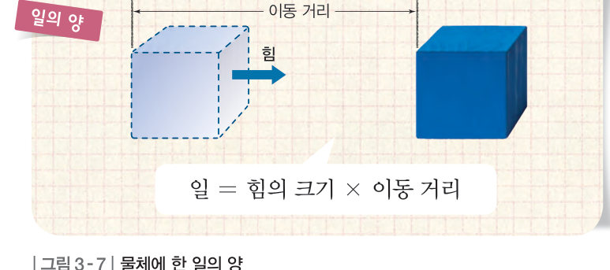
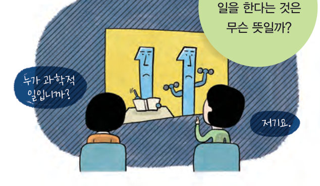
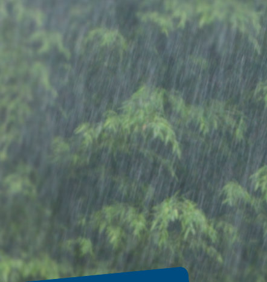
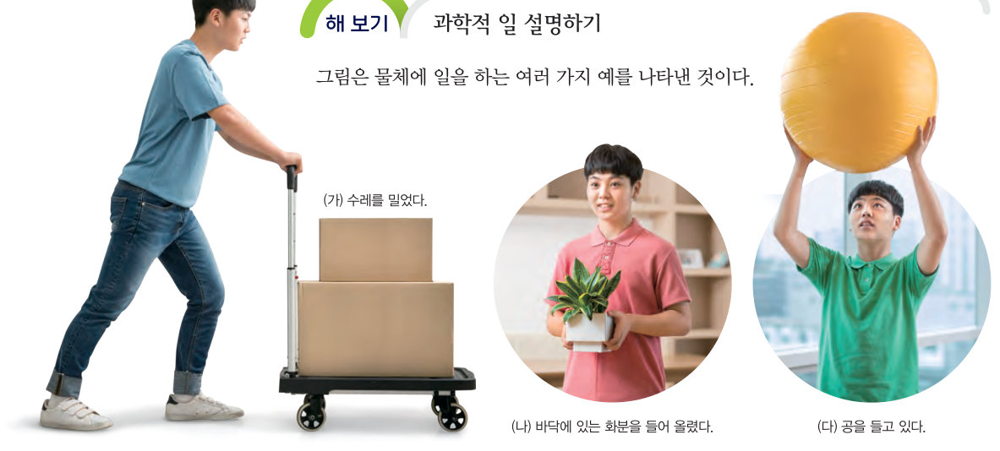
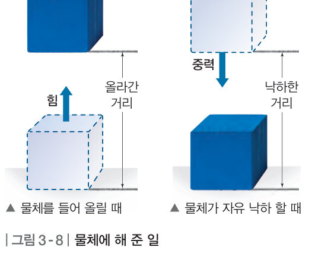

과학에서 일을 한다는 것은 무슨 뜻일까? 수레 밀기, 화분 들어 올리기, 공 들고 있기 장면에서 힘의 방향과 이동 방향을 비교하고, 일의 양 계산기로 힘과 이동 거리에 따라 일이 어떻게 달라지는지 확인해 보자.

소풍을 갔는데 갑자기 비가 오는 거야. 잠시 마루에 걸터앉아 비를 피하고 있었는데, 처마 끝에서 떨어진 빗방울에 바닥이 움푹 파인 것을 보았어. 이것은 떨어지는 빗방울이 가진 에너지 때문이래. 처마에서 떨어지는 빗방울의 에너지는 어떻게 생긴 것일까?
▶ 이미 배운 내용 | 지구에 있는 물체에는 중력이 작용한다.
🔑 첫 번째 열쇠 중력이 빗방울에 하는 일을 알아본다. · 두 번째 열쇠 중력이 빗방울에 하는 일과 빗방울의 운동 에너지는 어떤 관계인지 알아본다.
이 단원과 관련해 이미 알고 있는 것에 표시해 보자.
우리는 일상생활에서 ‘일이 힘들다.’, ‘많은 일이 있었다.’와 같이 일이라는 말을 여러 가지 뜻으로 사용한다. 과학에서는 물체에 힘이 작용하여 물체가 힘의 방향으로 이동할 때 힘이 물체에 일을 한다고 한다.

| (가) 수레를 밀었다. | |
| (나) 바닥에 있는 화분을 들어 올렸다. | |
| (다) 공을 들고 있다. | |
| (라) 가방을 메고 수평으로 걸어갔다. (가방에 한 일) |
수레를 밀거나 화분을 들어 올리는 것은 과학적 일을 한 경우이다. 이때 일의 양은 그림 3-7과 같이 물체에 작용한 힘의 크기와 물체가 힘의 방향으로 이동한 거리의 곱으로 구한다. 일 = 힘의 크기 × 이동 거리
물체에 작용한 힘의 크기가 클수록, 물체의 이동 거리가 길수록 일을 더 많이 한 것이다. 일의 단위로는 J(줄)을 사용하는데, 1 J은 1 N의 힘을 작용하여 물체가 힘의 방향으로 1 m 이동했을 때 한 일의 양이다.
그림 3-8과 같이 물체를 위로 들어 올릴 때에는 중력에 대해 일을 하는 것이다. 이때 물체를 일정한 속력으로 들어 올리는 힘의 크기는 물체의 무게와 같으므로, 일의 양은 물체의 무게와 들어 올린 높이를 곱하여 구한다. 또, 물체가 중력을 받아 자유 낙하 할 때에는 중력이 물체에 일을 하는 것이다. 이때 일의 양은 물체에 작용하는 중력의 크기와 물체가 낙하한 거리를 곱하여 구한다.

| ⑴ 일의 단위로는 J, N이 있다. | |
| ⑵ 공부를 하거나 책을 읽는 경우는 과학에서의 일이 아니다. | |
| ⑶ 가방을 메고 계단을 올라간 경우에는 가방에 일을 하지 않았다. | |
| ⑷ 일의 양은 작용한 힘과 힘의 방향으로 이동한 거리의 곱으로 구한다. | |
| ⑸ 1 J은 1 N의 힘을 작용하여 힘의 방향으로 물체를 1 m 이동시켰을 때 한 일의 양이다. |
| 평가 기준 | 스스로 평가 |
|---|---|
| 과학적 일을 이해하고, 일의 양을 구할 수 있다. | |
| 들어 올릴 때와 자유 낙하 할 때 한 일을 구별할 수 있다. |